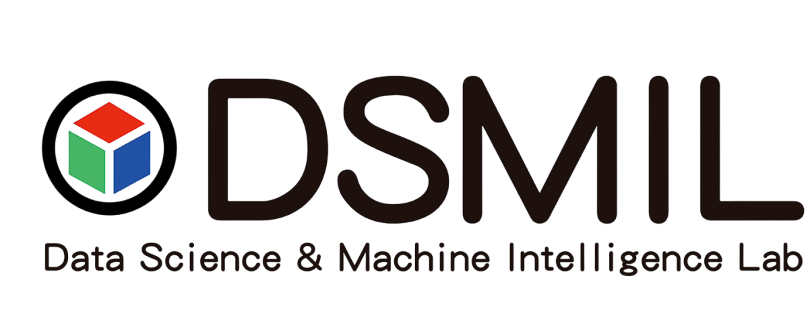

Experience
-

-

-

-
Greetings! I'm Tayla, a Business undergrad at VinUniversity who embarked on a thrilling journey from the realm of consulting to the captivating world of data science.
🌍 It all started during my exchange semester at the University of Technology Sydney, where I embarked on an adventure that forever changed my path. Amidst the buzzing academic atmosphere, a serendipitous encounter with the mesmerizing realm of data science ignited a blazing passion within me.
🔍 Curiosity led me to dive headfirst into the enchanting depths of data mining. Unveiling hidden patterns, extracting invaluable insights, and deciphering the secrets concealed within vast datasets became my modus operandi. Every algorithmic conquest and breakthrough propelled me further along this captivating path.
⚙️ Presently, as a Data Science Research Intern at the Data Science & Machine Learning Lab (DSMIL) of UTS, I find myself at the epicenter of cutting-edge research in the realm of data mining. Collaborating with brilliant minds, I unravel the mysteries of complex datasets and pioneer novel methodologies that push the boundaries of what is possible.
The MITB program will give me a strong grasp of essential computer science concepts like CS Math, Data Structures & Algorithms, Computer System Programming, and Operating Systems. I aim to secure internships at top companies through this program to solidify my computer science maturity and pave the way for a successful career in data science.
As the recipient of the VinUniversity Global Exchange Student Ambassador Grant, I gained valuable business analytics and data science skills during my exchange semester at the University of Technology Sydney. I also actively participated in projects with the DSMIL and UTS Consulting Club.
At VinUniversity, I founded VinUni Business Insiders, the first business academic club on campus, providing nationwide university students with business training. I also completed valuable internships at Shopee and FinFan. Opting for Business Analytics as my academic concentration was a natural choice for me, as I find the prospect of leveraging data to assist businesses extremely fascinating.
This project develops a forecast function for a specific bank’s cash withdrawal by utilizing characteristics of individual ATMs. After evaluating different modeling methodologies, a feed-forward neural network is chosen as the optimal model, offering the lowest MSE, mitigating multicollinearity, and reducing overfitting risk.
View ProjectThe project aims to create a SQL database using booking data of AirBnb, that offers valuable insights into the tourism industry. It assists businesses, customers, and investors in making informed decisions.
View ProjectThis project offers a secure, Blockchain-based federated learning model, connecting healthcare database owners and research agencies for accelerated innovation in AI while ensuring privacy and data security. LifeLink has won the National Champion Award at Vietnam Blockchain Olympiad 2021 and claimed the top spot in the Best HealthTech Project Prize at International Blockchain Olympiad 2021.
View Project